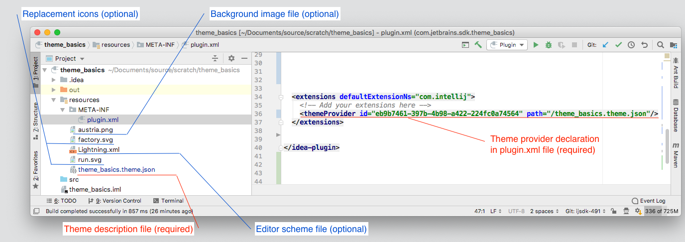
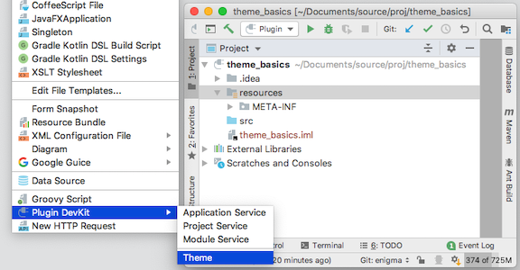
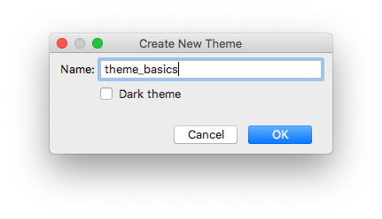

Creating Custom UI Themes
Creating a custom UI Theme is a process of choosing a base IDE Theme (Light or Darcula,) then changing aspects of the base Theme definition. Custom UI Themes can:
- substitute icons,
- change the colors of icons and UI controls,
- alter the borders and insets of UI controls,
- provide custom editor schemes,
- add background images.
The Structure of a UI Theme
UI Themes are components within IntelliJ Platform plugins. Theme plugins should be stand-alone plugins, and not combined with other plugin functionality. This approach is the best user experience because it avoids an IDE restart when installing a UI Theme plugin.
UI Themes have several components:
- A required Theme description (JSON) file in the plugin project’s
resourcesfolder. - A required
themeProviderdeclaration in the plugin’splugin.xmlfile, located in the plugin project’sMETA-INFfolder. - An optional Editor Scheme description (XML) file derived from an exported IDE editor scheme.
This file is located in the plugin project’s
resourcesfolder. - An optional background image file, located in the plugin project’s
resourcesfolder. - Optional icon image files, located in the plugin project’s
resourcesfolder.

Custom UI Theme Workflow
Creating a UI Theme follows this general sequence:
- Start with a Plugin Project
- Add UI Theme components to the plugin by using the DevKit UI Theme Wizard.
- Customize the UI Theme by adding data objects to the Theme description (JSON) file.
- Add an Editor Scheme or Background Image to the plugin.
- Build and test the UI Theme plugin.
- Deploy the UI Theme plugin
- Publish the UI Theme plugin
Creating Custom UI Themes
A UI Theme is added to an IntelliJ Platform plugin using the DevKit UI Theme Wizard.
Creating a UI Theme with the DevKit Theme Wizard
The DevKit Wizard is part of the DevKit plugin, which is bundled with IntelliJ IDEA. This Wizard can be used for both DevKit-based and Gradle-based plugins.
While a plugin project is open in IntelliJ IDEA, select the resources folder in the Project tool window.
From the main menu, select the New | Plugin DevKit | Theme action.

The Wizard then prompts for the name of the new Theme, and the basis for the Theme:

The best practice is to name the new Theme the same as the name of the plugin.
The checkbox indicates the basis for the Theme.
Checking Dark theme means basing the custom Theme on Darcula.
Leaving the box unchecked means basing the custom Theme on the default IntelliJ IDEA Light Theme.
For the SDK code sample theme_basics the box is unchecked.
Clicking the OK button creates a default Theme description file named [themeName].theme.json in the plugin project’s resources folder.
In this example, the file is named theme_basics.theme.json.
The content of the default file is a short set of key–value pairs:
{
"name": "theme_basics",
"dark": false,
"author": "",
"editorScheme": "/theme_basics.xml",
"ui": {
}
}
The value of the name key matches the first portion of the Theme description [themeName].theme.json file name.
The value of name is displayed in the Theme Preferences dropdown when the UI Theme’s plugin is installed in the IDE.
The value of the author key is by default empty.
The editorScheme section will be addressed in Adding a Custom Editor Scheme
The ui section will be addressed in Customizing UI Control Colors.
The Wizard also creates a themeProvider declaration in the <extensions> section of the plugin’s plugin.xml file.
This declaration binds the Theme description file to a theme provider extension using a generated unique id.
<extensions defaultExtensionNs="com.intellij">
<themeProvider id="eb9b7461-397b-4b98-a422-224fc0a74564" path="/theme_basics.theme.json"/>
</extensions>
At this point, the UI Theme theme_basics is a valid UI Theme.
Its plugin can be built and tested in IntelliJ Platform-based IDEs, giving the user the opportunity to select theme_basics in the Theme Preferences dropdown.
The custom Theme looks exactly like the IntelliJ IDEA default Light Theme, but it is a valid custom Theme.
Completing the Default UI Theme Description File
The default UI Theme definition can be directly edited to add or change some of the values for the default keys, if desired:
The following values can be changed directly in the Theme (*.theme.json) description file:
- The value of the
darkkey can be changed totrue, which would switch the basis of the Theme to Darcula instead of Light. - The value of the
authorkey, which defaults to an empty string, can be set to aStringliteral. In the case of thetheme_basicscode sample, it is set to “IntelliJ Platform SDK”.